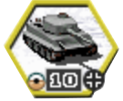
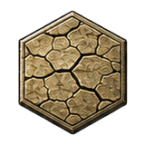
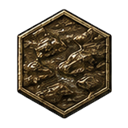
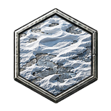

Chapter 1
Getting started
OSADA is a turn-based strategy game of the Second World War, fought on a hex map by formations of ten strength points.
Everything you command is a formation: a regiment or brigade represented by one counter, with a strength of 1 to 10 points, its own equipment, ammunition, fuel and accumulated experience. A formation reduced to zero strength is destroyed. Almost every rule in this manual is about keeping formations alive and experienced for longer than your opponent can.
Four ways to play
-
New Campaign
A chain of scenarios fought by one army. Your core formations, their experience and their commanders carry across every battle, and the outcome of each battle decides which one you fight next.
-
Single Scenario
One standalone battle. Nothing persists afterwards, and both sides are given prestige balanced against the value of the forces on the map.
-
Multiplayer
A local two-tab cooperative game. Both tabs replay the same commands rather than exchanging results, which is why the combat rules below are deterministic by default.
-
Tutorial
A short guided battle that teaches selection, movement, attack and ending a turn. Start here if you have never played a hex wargame.
Difficulty
A campaign asks for a difficulty before it starts, and the picker states exactly what each setting is worth in starting prestige, prestige per turn, extra turns and final score.
| Setting | Starting prestige | Prestige per turn | Turn limit | Score |
|---|---|---|---|---|
| Historical (default) | — | — | — | 100% |
| Tactical | +20% | +10% | +20% | 80% |
| Operational | +50% | +25% | +50% | 50% |
Historical is full difficulty: no bonuses, the standard turn limit and the full score. The two easier settings buy you prestige and time at the cost of score.
Your first turn, in order
- Read the briefing. It names the objectives you must take and, when the scenario is one of the ones that can only be survived rather than won, says so.
- Press Z for the strategic map and find the gold-bordered victory objectives. Everything else on the map is optional.
- Deploy from the reserve pool if the scenario gives you one (D).
- Move reconnaissance first. It sees furthest, it moves in stages, and what it finds decides where everything else goes.
- Bring artillery within range of where the assault will happen before the assault happens — it fires in support of whatever is attacked next to it.
- Attack, then move up. Press N repeatedly until no formation is left with anything to do, then end the turn.
OSADA is a port of Panzer Marshal that has since taken on a large part of Open General's rule set. Several rules therefore exist in two versions, and which one runs is decided by the ruleset profile and by the equipment file the campaign was built on. Wherever that is the case, this manual states the default and marks the switch.
Chapter 2
The turn
A battle lasts a fixed number of turns. Everything you can do happens inside yours.
The current turn and the limit are shown in the top left of the screen. Within a turn each side moves in sequence; while it is your turn, every formation you own may take one action and, separately, move. Ending the turn passes control on and cannot be taken back.
What a formation can spend in one turn
- A move, worth its movement allowance in points. Reconnaissance and formations with the Reconnaissance Movement trait may split it into several stages.
- An attack, costing one ammunition point. Moving and attacking in either order is allowed by default; see Combat for the ruleset switch that restricts guns.
- Or one action instead: resupply, reinforce, overstrength, laying or clearing mines. These end the formation's turn outright — a formation that resupplies has moved and fired as far as the rules are concerned.
Mounting and dismounting from organic transport is free and does not grant a second move. A command that cannot be run right now stays on screen greyed out, and its tooltip states the reason rather than leaving you to guess.
Sleep and wake
A formation you have decided to leave where it is can be put to sleep, which skips it in N / P navigation for the rest of the turn. It still counts in the end-of-turn warning that tells you formations can still act, so sleeping a formation hides it from the cycle without hiding it from you.
What happens when the turn ends
- Formations that did not move dig in. Entrenchment rises by one step whenever enough progress has accumulated; see Entrenchment.
- Idle ground formations resupply themselves — by default only in a city hex, and never with an enemy adjacent.
- The weather is rolled and the ground may shift. Rain and snow do not change the ground immediately; see Weather & terrain.
- The date may advance — see The calendar below. This is what makes equipment become available or obsolete mid-campaign, and it is what moves the battle from one month's weather table to the next.
- Losses outside combat are reported. Anything that disappeared between turns gets a line in the Turn Report (T) rather than vanishing silently.
The calendar
The date moves on complete rounds, never on individual player phases: both sides move, and only then does the calendar look at itself. A scenario's author sets the rate in one of two mutually exclusive ways —
- turns per day: a stated number of complete rounds passes before the date moves by one day. Three turns per day means three rounds — six player phases on a two-sided battle — for each day of the war;
- days per turn: the reverse, where one complete round advances the date by several days. Operational-scale scenarios use this.
A scenario that sets neither gets one round per day, which is the historical default. The current date is shown in the top bar, and the Turn Report records it.
Winning and losing
Battles are won by taking or holding victory objectives — the hexes with gold-bordered flags. Towns, supply points, ports and airfields that are not victory objectives pay prestige when captured but do not move you towards victory. Destroying every enemy formation also ends the battle in your favour.
How fast you finish decides the grade. Each scenario carries three turn thresholds:
- Brilliant victory — inside the first threshold. Pays the most prestige, and awards a prototype formation to your core army in the next scenario.
- Victory — inside the second threshold.
- Tactical victory — inside the third.
Running out of turns is normally a defeat, and in a campaign it may end the run depending on how that campaign's branches are drawn. Scenarios written in Open General's style instead grade the final turn by how many objectives you were still holding, so a battle you could not finish can still be a victory if you held enough ground.
Chapter 3
Reading the battlefield
Two layers, six neighbours per hex, and only as much of the enemy as you can actually see.
Two layers
Every hex has a ground layer and an air layer, and a hex may hold one formation in each. A switches which layer your clicks address, so a click on a hex with a tank under a fighter selects the one you meant. Zones of control, interception and most combat rules apply within a layer; the exceptions are named where they occur.
Spotting and fog of war
Each formation has a spotting range in hexes. There are no terrain restrictions on it — a mountain does not block sight past it — but bad weather shortens it, and being spotted is what makes an enemy attackable at all.
Visibility follows your formations by default: a reconnaissance element that spots a hex and drives on takes the visibility with it. Any formation that moves and does not cancel the move surveys everything within its spotting range as it goes.
Spotted hexes stay spotted (spotting_memory) makes a hex your side has seen this turn stay visible until your turn ends. Cities and airfields watch (installation_spotting) lets a city, port or airfield you own see its own hex and its neighbours with no garrison at all. Both are off by default.
Extended line of sight
(extended_los) is what makes terrain matter to sight, and it is a scenario option
that Author's Vision leaves to the author. With it in force: mountains, hills, forest and city
hexes cut the line of sight to whatever lies directly beyond them; a formation in forest is not
spotted by ground formations unless they are adjacent; and a formation in forest or city is not
spotted by aircraft more than two hexes away. Equipment carrying Cut LOS blocks sight
through its own hex — for both sides, so a screen can mask your own observers as
well as the enemy's.
Zone of control
A formation exerts a zone of control over the six hexes around it. Ground zones affect ground formations and air zones affect air formations. Entering a hex in a spotted enemy's zone of control consumes the whole remaining movement allowance, so the move stops there; the formation may still attack from where it stands.
Two things get past it. Reconnaissance, and anything with the Reconnaissance Movement trait, moves in stages and can therefore keep going after being stopped once. A commander with Superior Maneuver ignores enemy zones of control outright.
An aircraft projects no zone of control at all
unless the scenario asks for one. Air zone of control (air_zoc) is
that request, honoured by Author's Vision: with it on, a fighter over a road stops the column
beneath it exactly as a ground formation beside it would. Individual equipment may also carry
No ZOC and project none whatever the setting.
An enemy you have not spotted projects no zone of control, because you cannot plan around what you cannot see. Instead, a move that runs into a hidden formation is a surprise: the move ends there, combat resolves with the penalties described under Combat, and the move cannot be undone.
Objectives and capture
Only infantry, tanks, reconnaissance and anti-tank formations flip a hex's owner and flag by occupying it, plus any equipment that carries Open General's Capture Flag attribute. Artillery, air defence, aircraft, ships, transports and fortifications can hold a hex and deny it to the enemy without ever taking it — a common way to lose a battle you thought you had won.
L toggles the name labels on optional capture points. Victory objectives stay labelled either way, because those are the ones you were ordered to take.
Objectives that are not hexes
Taking the victory hexes inside the turn limit is the usual way to win, but a scenario's author has four other conditions available. You need to meet one of them, not all — every one of these is an alternative route, never an extra hurdle. The briefing states which are in play, and the objectives rail tracks them.
- Hold a number of objectives
- Instead of taking every victory hex, hold a stated number of them once the turn limit for that victory level has passed. The two sides usually have different numbers.
- Typed victory hexes
- An objective can count towards some victory levels and not others. A hex may be required for a brilliant victory alone, so that letting the deadline for one pass genuinely changes what you have to take next.
- Get formations off the map
- The author marks escape hexes and a number of formations to get out through them. A formation that ends its move on one is withdrawn — taken off the map and counted. Withdrawal is not destruction: it is not a casualty, the enemy is not credited with it, and in a campaign the formation stays on your core roster. Exits are typed, so an aircraft cannot leave through a ground exit and a division cannot leave through an air one, and some scenarios accept only designated formations.
- Destroy a number of enemy formations
- A straight count of kills, tracked per side.
- Must-survive formations
- The mirror image of the others: the author names formations that must still be alive at the end. Losing one loses the battle however well the rest of it went. These are marked on the counter and named in the briefing.
Trigger hexes
A hex can carry something the author left there for whoever reaches it first. A formation that ends its move on one may find replacements, experience, prestige, a commander, a prototype vehicle or a wider view of the ground. It fires once, for whoever gets there, and the log records what was found. Most triggers in the imported campaigns are silent about themselves; where the author wrote a line of their own, that is what you are shown.
Tools for looking
- Strategic map — Z
- Zooms out to the whole map. The fastest way to see where the objectives are and which of them have changed hands.
- Hex grid — H
- Draws the hex outlines, which makes counting range and adjacency exact instead of approximate.
- Unit inspector — I
- Pins the selected formation's full statistics so they stay on screen while you look at something else.
- Turn report — T
- This turn's events, losses and score, including anything that happened while the other side was moving.

Chapter 4
Movement
Movement points, spent per hex according to terrain, weather and what the formation moves on.
Each formation has a movement allowance in points. Entering a hex costs a number of points taken from the movement table for its movement type; a road or a bridge between two hexes charges the road cost instead. The overlay drawn when you select a formation already accounts for terrain, weather, fuel and zones of control, so a hex it offers is a hex the formation can actually reach.
Fuel
Formations that burn fuel spend one point per movement point. Leg and towed formations carry no fuel rating at all and can instead be given transport. Running dry does not destroy anything by default — it stops the formation moving until it is resupplied.
Snow doubles fuel use (snow_fuel): two fuel per movement point in snow. Off by default.
Aircraft fuel model (air_fuel): a sortie costs at least one third of the aircraft's full movement in fuel however short the hop, and an aircraft that ends the turn dry with no airfield or carrier in reach is lost. Off by default — OSADA's own model simply grounds a dry aircraft. Every loss it does cause is reported in the Turn Report.
Phased movement
Reconnaissance formations may move, stop, look at what they revealed, and move again while they still have points left. Any formation whose commander has Reconnaissance Movement gains the same allowance. Everything else spends its move in one commitment.
Transport
- Mount / Dismount — M
- Loads the formation onto its own organic ground transport, which usually moves further but fights far worse: while mounted, the transport's movement and vulnerability apply, and a mounted formation that moves cannot fire that turn. Infantry is the exception — it bails out when attacked and takes no combat penalty for having been mounted. Limbering is free and does not grant a second move, but it also does not return a move already spent.
- Embark / Disembark — E
- Boards air or naval transport, and only at a port or airfield with a transport point left in the pool. The formation must not have moved yet this turn. A carried formation cannot fight normally, and disembarking needs a free adjacent hex to unload into. Paratroopers are the exception that can drop anywhere.
Not every transport takes every passenger. Air, naval, rail and container transport each carry a weight class, and a formation too heavy for a given lift is refused rather than silently squeezed aboard. This is why a scenario can give you naval transport and still not let your heavy armour board it.
Riding to get there
Ordering a formation that owns organic transport to a hex its legs cannot reach does not refuse the order: it climbs aboard and drives. Those hexes are marked in the reachable set, so you can see before you commit which part of the range is on foot and which is on wheels. Mounting is free and costs no part of the move — but the formation arrives mounted, with a mounted formation's vulnerability, and it cannot fire that turn if it moved.
Rail transport
Where the author granted a rail pool, a formation that has not yet acted can entrain and be carried across the rail network for one point of that pool. A station is needed at both ends unless the equipment carries No Need Station, which lifts the requirement at both. The pool is per player and per scenario; when it is spent, the railway is closed for the rest of the battle.
Rail transport (rail_transport) is
honoured by Author's Vision and off under OSADA Default. It changes nothing in a scenario whose
author granted no pool, which is most of them.
Rivers
Entering a river hex ends a ground formation's movement, and it may leave normally the following turn — unless the river is frozen, which removes the penalty entirely. Dismounted bridging engineers act as a bridge for the hex they occupy, including where there is no ford; a pontoon appears and friendly formations cross it freely. Some rivers are drawn as impassable and cannot be bridged at all. A formation carrying the Bridging attachment or trait treats passable river hexes as rough terrain instead.
Undo — and when it is refused
U or Ctrl+Z rewinds the most recent move, restoring position, fuel and movement state. It is deliberately unavailable once the move revealed something, because taking it back would let you keep the intelligence and un-spend the move:
- the move revealed new information;
- the formation was caught by surprise;
- a hidden enemy stopped the move;
- anti-air fire intercepted the move;
- any combat happened;
- a later irreversible command was issued.
This is a rule, not a bug, and the greyed-out button says which of the six applies.
Minefields
Minefields are a hex property, not a formation. They exist only when the campaign's ruleset turns them on, and they are off by default.
When they are on: entering a field you have detected costs the rest of your movement and no strength; entering one you have not also costs strength and reveals the field in the same instant. A formation standing in a minefield has one movement point and reduced defence. Formations able to drop mines can lay a field for two ammunition points and their whole turn, and your own formations cross your own fields freely. Clearing is an attempt that can fail, and a failed attempt suppresses the formation; either way it spends the turn.
Chapter 5
Combat
Hover an enemy in range and the forecast tells you what to expect. Most of it is settled before you commit; a little of it is not.
The forecast, and what it can and cannot promise
Passing the pointer over an enemy inside your selected formation's firing range raises the attack reticule and the forecast: your projected casualties under your flag, the enemy's under theirs. On touch devices it appears automatically for every formation in range.
Almost all of combat is settled arithmetic. Damage is an expected value rather than a die roll, so attack and defence values, attachments, terrain, weather, entrenchment, experience and supporting fire all resolve to a fixed number before you commit. The forecast shows you that number.
What it cannot show you is initiative. Open General decides who reacts first from equipment, terrain and the crews' experience — one point per completed experience bar — plus a small random swing for the uncertainty of battle, and that swing is rolled only when the attack is actually made. So the forecast is an estimate: a close one, and usually exact, but an exchange can turn on who fired first. This is the default.
The roll is drawn from the battle's own seeded sequence, which travels in the save. That is what lets multiplayer replay combat on both clients instead of transmitting the outcome, and it means the swing cannot be re-rolled by saving and reloading. Nothing is drawn by hovering, by previewing or by the computer thinking — only by the attack you actually order.
Combat initiative
(initiative_model) is Open General's full model by default:
equipment, terrain, experience and chance. Set it to Equipment and terrain in a profile
and combat becomes wholly deterministic — no experience in the initiative comparison, no swing,
and a forecast that is the exact result. It is the only setting in the game that decides whether
combat is stochastic at all, and it also changes what a First Strike commander
is worth, because that trait re-signs the initiative difference rather than adding to it.
What decides the result
Each strength point makes its own attack. The attacker's power against the defender's target type — hard, soft, air or naval — is cross-indexed against the matching defence value, and the difference is what casualties are drawn from. On top of that, in order:
- Attachments fitted to either formation.
- Close combat, when infantry is involved in a city or forest hex.
- Commander traits on either side.
- Terrain, and the initiative ceiling it imposes.
- Weather — rain and snow give every defender +3 defence.
- Entrenchment, unless it is bypassed.
- Experience, and any Combat Support in reach.
- Range: a defender uses its close-combat defence against an adjacent attacker and its ranged defence against a distant one.
- Initiative. The side with the higher initiative takes reduced damage.
Ammunition
Each attack costs one ammunition point. A formation out of ammunition cannot initiate an attack and cannot return fire when attacked, and artillery out of ammunition cannot fire in support.
Empty units fight worse (dry_unit_penalties) adds Open General's penalties on top of those prohibitions: a formation out of ammunition defends with halved strength and halved initiative, one out of fuel has its initiative halved. Off by default.
Entrenchment
A formation that has not moved digs in at the end of its turn, even if it attacked, resupplied or did anything else. Moving out of the hex loses every level.
Every terrain type carries a base entrenchment that a formation in that hex snaps to immediately — it replaces the current level rather than adding to it. Above the base, levels accumulate slowly, faster for experienced formations and for classes that dig well (infantry digs fastest, then reconnaissance, anti-tank, artillery and air defence; aircraft and ships not at all). The ceiling is five levels above the terrain's base.
Every attack, successful or not, knocks one level off. Repeated attacks in the same turn can push a defender below the terrain's own base, which is why a bombardment by aircraft and artillery before the ground assault works. Engineers — other than bridging engineers — and anything carrying the Bunker Buster attachment ignore entrenchment entirely, as do the Infiltration Tactics and Street Fighter traits in cities, rough terrain and ports. Ferocious Defense makes a defender's entrenchment impossible to ignore.
Close combat
In a city or forest hex, an exchange involving infantry is fought against the non-infantry formation's close-combat defence, which is usually much lower than its ground defence. That is the whole reason infantry holds cities and forests and tanks do not. Infantry keeps none of this advantage in clear terrain, where armour is dominant instead.
Rugged defense and surprise
A well dug-in defender may put up a rugged defense against an adjacent attacker: the attacker's own defence drops to zero and its attack is halved for that exchange. It becomes more likely the deeper the defender is entrenched, the better it digs, and the further its experience runs ahead of the attacker's.
A formation caught by surprise — by walking into a hidden enemy, or by an ambush trait — suffers the same treatment, and additionally receives no supporting fire from its neighbours.
Supporting fire
When an attacker moves adjacent to the formation it is attacking, friendly formations near the defender fire back on the defender's behalf, at no ammunition or action cost to the defender:
- Artillery fires in support against a ground attacker, out to its own gun range.
- Flak, air defence and fighters fire in support against an air attacker, out to the anti-aircraft reach the ruleset sets.
Supporting fire is one of the strongest tools in the game and it is the reason a gun line placed behind the front is worth its prestige. It does not happen at all when the attack is made from a distance, or when the attacker is surprised.
Distant supporting fire is halved (support_fire_range_falloff): only a supporter adjacent to the defender fires at full strength, everything further away at half. Off by default, where every eligible supporter fires at full strength.
Overrun
A tank that destroys an adjacent enemy outright while taking no more than one point of loss itself, and was not surprised, overruns it. The defender does not fire back, the attack does not spend the tank's action for the turn, and the tank gets a movement point back — so it may move on and attack again. A single strong tank formation can roll up a line of weakened defenders in one turn this way.
Retreat and surrender
A ground defender that loses roughly 60% of its strength to a ground attacker retreats into an adjacent hex. The threshold is not fixed: an already weakened formation breaks sooner. Artillery, tactical bombers and fortifications never retreat.
A formation that must retreat and has nowhere legal to go surrenders and is destroyed. Encirclement is therefore a weapon in itself. Equipment marked as never surrendering, and a commander with Ferocious Defense, are exempt; so is a formation whose only blocked escape routes are its own side's.
Experience from combat
Both sides gain experience from every exchange, attacker and defender alike. You gain most by destroying — or forcing back — an enemy that was more experienced or better equipped than you. Experience is capped at 500, which is five full bars. See Supply, strength & prestige for what experience buys and how replacements dilute it.
Air combat and interception
Aircraft cannot start an attack in overcast, rain or snow, though they still defend themselves; a commander with All Weather Combat is exempt. Any exchange that crosses the air/ground boundary — anti-aircraft guns firing upward as much as aircraft striking down — brings half its strength points to bear in bad weather.
Anti-aircraft interception fires on aircraft as they move, not only when they attack. Concealed anti-aircraft guns intercept an aircraft that moves through or stops within reach; that is the baseline and it is not switchable off. Depending on the equipment file, a gun that has intercepted may be unable to also fire in air defence that turn, and spotted guns may intercept aircraft that stop within reach — a spotted gun never intercepts one merely passing by. Hexes covered by spotted anti-aircraft guns that can actually intercept are drawn on the map before you commit a route. An interception makes the move final.
Barrage — shelling a hex nobody can see
An ordinary attack needs a target you can see. A barrage does not: a formation carrying the bombard ability can shell any hex inside its firing range, spotted or not, and the pointer becomes a crosshair over the hexes it may hit. It costs one ammunition point and the formation's turn, and it is a shot in the dark — it can miss entirely.
A barrage that lands has three possible effects, depending on what was actually there:
- a formation in the hex loses strength, ammunition and fuel, and some of its entrenchment — and a hidden formation that is hit stays hidden. You are told the shells found something, not what;
- a city, airfield, bridge or port is reduced to rubble and stops working until somebody repairs it;
- open ground is churned, which costs the next formation across it an extra movement point.
Barrage (barrage) is a scenario
option: the author decides whether their battle allows it, and under Author's Vision that decision
stands. OSADA Default keeps it off everywhere. Either way a formation also needs the ability,
which is a property of its equipment.
Shell craters (craters, off by
default) is OSADA's own rule rather than an Open General one. With it on, a barrage on open ground
leaves a crater: it costs a movement point to cross, and it gives whoever holds it one level of
entrenchment they did not have to dig for. It is a floor, never a bonus — it can never
beat a turn spent entrenching, so shelling your own front line is not a way to fortify it.
Counterbattery fire
Artillery that shells your formations can be answered by your own guns without you ordering it. A gun with the counterbattery ability, in range of an enemy artillery piece that has just fired on a friendly formation, fires back — once per turn, and only at artillery. The reply is reported on the map and in the log, pinned to the gun that answered: a formation that comes back from a successful bombardment two points weaker with nothing on screen to explain it reads as a bug rather than as a rule.
Counterbattery
(counterbattery) is off under both built-in profiles. No scenario
asks for it, so there is nobody for Author's Vision to defer to.
Sabotage, and getting out of the way
Two rare abilities resolve before the main exchange. The full order is interception, supporting fire, sabotage, evasion, then the attack itself.
A saboteur spends one ammunition point on an attempt to disable the defender outright before a shot is fired, and a formation that has been sabotaged cannot evade. Very few formations in the shipped campaigns carry the ability.
Evasion is the defender slipping the attack entirely. Submarines evade by default; the equipment file may grant it to other classes, or to individual records, and it sets the probability.
At sea
A naval attacker firing on a land target rolls against a higher threshold than a land attacker does — which is why ships are poorer at shore bombardment than their raw attack values suggest. Artillery, level bombers and fortifications fire against that same higher threshold.
Extended naval rules
(extended_naval) is a scenario option, honoured by Author's Vision: ships return fire
against artillery and forts, ships engage submarines only at range 1, destroyers escort naval
transports, and submarines need a line of fire. Naval critical hits
(naval_critical_hits, off by default) adds Open General's sinking roll — a naval shot
that beats the odds destroys its target outright, whatever its remaining strength. Submarines get
a bonus to it, firing or fired upon.
Kamikaze formations do not come back. Depending on the equipment file, such a formation is lost either once it has fought or spent its last ammunition, or once its fuel runs out — and in the second model it may not resupply at all. The unit card says which before you commit it.
Chapter 6
Supply, strength & prestige
Ammunition and fuel are free. Bodies are not.
The three restoring actions
All three require that the formation has not yet moved, fired or supplied this turn, and all three spend its turn.
| Action | Restores | Prestige | Requires |
|---|---|---|---|
| Resupply S | Ammunition and fuel, for the formation and its organic transport | Free | Ground anywhere; aircraft on or beside an own airfield or carrier; ships anywhere, best in port |
| Reinforce R | Strength back up to the formation's basic strength, and resupplies at the same time | Charged per strength point | Below full strength |
| Overstrength O | Strength above basic strength | Charged per point, at a premium | Already at full strength, at least 100 experience, and not used before |
Earlier versions of this manual, inherited from the engine OSADA was ported from, claimed resupply is paid for in prestige. It is not, and never has been in OSADA. Only reinforcement and overstrength are charged.
Local supply efficiency
How much a resupply or reinforcement actually restores depends on where the formation is standing: the terrain, the road and rail links it can draw on, the ground condition, and how many enemy formations are adjacent. A city with no enemy nearby restores everything; a river hex with two enemies next to it restores very little. The action panel states the exact percentage and the exact gain before you commit, so there is nothing to estimate.
Automatic resupply
A ground formation that does nothing at all for a whole turn resupplies itself once, at the turn change. By default this requires a city hex; under Idle ground units resupply anywhere (ground_auto_supply) it works wherever the formation stands. Under either setting an adjacent enemy blocks it, because a formation being shot at is not idle.
Basic strength is not always ten
A formation's basic strength is the ceiling ordinary reinforcement restores it to, and it is ten only where the scenario's author did not say otherwise. Most shipped scenarios do say otherwise — a formation authored at basic strength 5 reinforces back to 5, not to 10, however much prestige you spend. It is the number the unit card shows beside current strength, and it is what the reinforcement preview is quoting.
Overstrength
Every completed experience bar buys one strength point above the formation's basic strength; a partial bar buys nothing. With the experience cap at 500, a formation of basic strength 10 tops out at 15. Overstrength is used once per formation, is priced at a premium, and is the one restoring action that does not dilute experience.
Replacements dilute experience
Ordinary replacements arrive untrained. A formation's experience becomes the strength-weighted average of its surviving veterans and its new intake — a formation at strength 3 with 400 experience, rebuilt to 10, comes out with 120.
This is on by default and it is a real strategic constraint: there is no way to heal a damaged veteran without spending some of what made it veteran. The alternative is to pull it out of the line and let it fight at reduced strength. The reinforcement preview states the new experience before you buy.
Replacements dilute experience (replacement_experience) can be set to Preserved, which is how OSADA behaved before August 2026. Default is Diluted.
Green replacements
(green_replacements, off by default) adds Open General's second, cheaper intake
beside the normal one. Greens cost a fraction of the standard price — a quarter of it where the
equipment file does not say otherwise — and they arrive with no training at all, so they dilute
experience harder than ordinary replacements do. Ordinary replacements are what Open General calls
elite: the equipment file prices those too, and a campaign may make them dearer or
cheaper than the base cost. The rule needs the campaign's equipment file to price greens at all,
so switching it on does nothing for content that never defined them.
Prestige
Prestige is the currency, and it represents standing with the high command rather than money. You earn it by capturing objectives and other flagged hexes, by winning scenarios — the better the grade the larger the award — and, in scenarios that grant it, by an amount each turn set by the scenario and scaled by difficulty.
You spend it on new formations, on reinforcement and overstrength, on upgrading a formation's equipment, and on attachments. The Influence trait reduces upgrade costs; Liberator doubles the prestige from every objective and victory hex its formation captures.
Core, auxiliary and the reserve
In a campaign your force is split. Core formations are yours: they carry their experience, their commanders and their attachments from one scenario to the next. Auxiliary formations are lent to you for one battle and do not come with you, so spending prestige on them is spending it on nothing.
The Reserve (D) holds core formations not deployed on the current map. The Equipment window (B) is where buying, upgrading and selling happen. What you can buy is limited by the campaign's own equipment list and by the current date — equipment becomes available and becomes obsolete as the campaign's calendar advances.
What you are allowed to buy
The equipment list is not the only limit. A scenario's author has two further ways to constrain your purse, and both are stated in the briefing:
- A purchase list. The author can whitelist exactly what a given player may buy or upgrade into, drawn from the equipment file's own fronts and factions. Anything outside the list is not offered, however much prestige you have.
- A purchase cap. The author can limit how many formations you may add to your force. The cap counts growth, not spending: replacing a formation you lost does not consume any of it, so a cap of zero still means "you may rebuild what you had, and nothing more". Some scenarios exempt core formations from the count.
Building, repairing and blowing things up
Engineers can change the map. Where the scenario allows it, a formation with the build or repair ability can raise a bridge, a fortification, an airfield or a port, or put a bombed one back into service; a formation with the demolition ability can take one away, which is how you deny a crossing to an army you cannot beat to it. Each is a whole turn's work.
Build, repair and demolition
(build_and_repair) is a scenario option, and the author states it in three separate
switches — build, repair and demolish are permitted independently. Author's Vision honours all
three; OSADA Default keeps them off. The abilities themselves belong to the equipment, and are
shown on the unit card.
Depot supply (depot_supply, off by
default) replaces resupply-anywhere with Open General's depot model: formations resupply only
beside a supply unit or in a city or port, and a depot supplying others may have to spend
ammunition to do it. No shipped campaign uses it — no equipment file asks for the
model and no equipment record is marked as a depot — so the switch is inert on the content that
comes with the game. It is here for content that defines them.
Attachments
Where the campaign's equipment file defines them, a core formation may be fitted with up to two attachments, each bought with prestige and each carrying a stated penalty as well as a bonus. The implemented slots are Recon, Air Defense, Bridging, Anti-Tank, Support/Ammunition, Fast Entrench, Bunker Buster, Fuel Pods and Fast Speed. Attachments are a per-campaign feature — most campaigns' equipment files define none, and the ruleset can only switch them off, never invent slots the content never had.
Chapter 7
Commanders
In a campaign, officers are named people with careers. In a standalone scenario they are a pair of traits.
A campaign core formation gets the persistent commander system described first. A formation that belongs to a standalone scenario has no formation record behind it and takes the older path described at the end of this chapter. You never see both for the same formation.
How an officer emerges
Notable actions — not every routine attack — accumulate recognition on a formation, surfaced as a coarse status such as "officer recommendation pending". When enough has accumulated, a check produces an officer, with protection against a campaign-long drought so a formation that keeps distinguishing itself does eventually get one. The result is seeded from the formation's own history, so reloading an autosave and refighting the same battle produces the same officer: you cannot reroll a better one.
A new commander arrives with a name drawn from their nation, a birth year, a birthplace, a social background, a pre-war profession, a military education and a prior service record — and with the distinguishing action that produced them recorded as the reason. The event is shown after combat resolves, never during the attack animation.
What a commander is worth
Each officer carries two effective traits: a professional background, which follows from the formation's class and the officer's own history, and a learned trait derived from the action that made them. Later traits are learned from evidence rather than granted at random — an officer does not acquire river-crossing expertise while fighting in a desert.
Renown, promotion and mortality
Accumulated command experience raises an officer through five tiers of renown: Unknown, Experienced, Distinguished, Hero, Legend. Renown gates entry to the Hall of Fame and is shown wherever the officer is.
Officers can be wounded and can be killed. A wound takes them out of the line for a time; a death is permanent and is memorialised. This is the reason a veteran formation is worth more than the sum of its equipment, and the reason spending it carelessly costs more than the replacements.
The Hero Desk and the Hall of Fame
The Hero Desk, on the main menu, holds every commander you have led: the active officers of campaigns in progress, and the archived careers of the completed, the retired and the fallen. The Hall of Fame collects the ones who reached the highest renown. Both survive across campaigns; starting a campaign over replaces that campaign's archived roster, and the confirmation says so before it happens.
Scenario units: the legacy system
A formation with no campaign formation behind it takes the older path. It may earn a leader after a combat once it has at least one experience level, and reaching the experience cap of 500 guarantees one. That leader grants two traits: its class's signature trait, and one rolled from the rest of its class list. A formation that has a leader can never get another.
| Class | Signature trait | Effect |
|---|---|---|
| Infantry | Tenacious Defense | Ground defence increased by 4. |
| Tank | Aggressive Maneuver | Movement increased by 1. |
| Recon | Elite Recon Veteran | Spotting range increased by 2. |
| Anti-Tank | Tank Killer | No penalty for moving into combat. |
| Artillery | Marksman | Attack range increased by 1. |
| Air Defence | Mechanized Veteran | May move and fire in the same turn. |
| Fighter | Skilled Interceptor | May intercept several enemy fighters in the defensive phase. |
| Tactical Bomber | Skilled Assault | Cannot be surprised while moving. |
Trait catalogue
These are the traits that can be held on either path. A few are marked where their effect is worth knowing precisely.
| Trait | Effect |
|---|---|
| Aggressive Attack | Every attack value increased by 2. |
| Aggressive Maneuver | Movement increased by 1. |
| All Weather Combat | The aircraft is not affected by weather: it can attack in overcast, rain and snow, is not halved in air/ground exchanges, and does not lose spotting range. Air formations only. |
| Alpine Training | Treats forest and mountain hexes as clear terrain when moving. Terrain defence, entrenchment and close combat still read the real terrain. |
| Battlefield Intelligence | Cannot be surprised. |
| Bridging | Treats passable river hexes as rough terrain when moving. |
| Combat Support | Grants an experience bonus to adjacent friendly formations. |
| Determined Defense | Every defence factor increased by 2. |
| Devastating Fire | May fire twice in a turn. The first shot consumes the bonus but does not otherwise count as an attack, so a formation that has not moved can still resupply after firing once. |
| Ferocious Defense | Entrenchment cannot be ignored by the enemy, and the formation never surrenders for want of a retreat hex. |
| Fire Discipline | Spends only half an ammunition point per attack. |
| First Strike | Fires first against an enemy when it wins the initiative in a combat round. |
| Forest Camouflage | In a forest hex, cannot be spotted unless an enemy moves adjacent. |
| Infiltration Tactics | Ignores enemy entrenchment when resolving combat. |
| Influence | Upgrades to better equipment cost less prestige. |
| Liberator | Double prestige for every objective and victory hex this formation captures. |
| Marksman | Attack range increased by 1. |
| Mechanized Veteran | May move and fire in the same turn — which matters only where the ruleset makes guns fire before moving. |
| Overwatch | Fires at any enemy that moves within range. The enemy is automatically surprised, so this formation fires first and against the enemy's close-assault rather than ground defence factor. |
| Overwhelming Attack | Converts some of the suppression it would inflict into kills. |
| Reconnaissance Movement | Phased movement, like a reconnaissance formation. |
| Resilience | Suffers fewer casualties than normal when attacked. |
| Shock Tactics | Suppression it inflicts lasts the whole enemy turn rather than the combat round. |
| Skilled Assault | The bomber cannot be surprised while moving. |
| Skilled Ground Attack | Inflicts more casualties than normal when attacking. |
| Skilled Interceptor | May intercept several enemy fighters in the defensive phase. |
| Skilled Reconnaissance | Spotting range increased by 1. |
| Street Fighter | Ignores an enemy's city entrenchment when resolving combat. |
| Superior Maneuver | Bypasses enemy zones of control entirely. |
| Tank Killer | No penalty for moving into combat. |
| Tenacious Defense | Ground defence increased by 4, and rugged defense becomes more likely. |
Chapter 8
Weather & terrain
The sky changes what everyone can do. The ground changes how far they can go.
The sky
- Fair No effect.
- Overcast Aircraft cannot attack. Air/ground fire halved. Aircraft spot half as far.
- Raining As overcast, plus +3 defence for every defender, and everyone spots half as far. A run of rain turns the ground to mud.
- Snowing As raining. A run of snow freezes the ground.
Four rules follow from bad weather, and each is separately switchable in the ruleset. All four ship on.
- Aircraft are grounded in overcast, rain or snow: they cannot initiate an attack, though they still defend themselves. (weather_grounds_aircraft)
- Air/ground fire is halved. Any exchange that crosses the air/ground boundary brings half its strength points to bear — flak firing upward as much as aircraft striking down. Combat within one layer is untouched. (weather_halves_air_ground)
- Rain and snow give +3 defence to whoever is defending, on land, at sea and in the air alike. Overcast does not. (weather_defense_bonus)
- Sight is halved — for aircraft in anything worse than fair, for everyone else in rain or snow. (weather_halves_spotting)
A commander with All Weather Combat is exempt from all four.
Where the weather comes from
The sky is simulated rather than scripted. Each scenario sits in a climate zone, and each zone has a table per month of the year giving the average length of a clear spell, the average length of an overcast one, and the chances that an overcast spell brings precipitation and that the precipitation is snow rather than rain. The battle alternates clear and overcast spells of random length drawn against that table.
Two consequences are worth knowing. A long campaign battle that crosses from one month into the next changes tables as it goes, so a September scenario running into October gets October's weather from October onwards. And the spell you are in has a length: the current sky says nothing about how many more turns of it are coming, which is why a downpour can end on the turn you had planned around it, and why saving and reloading will not reroll it — the running spell is stored in the save.
The ground
-

Dry Baseline movement costs. -

Mud Movement is markedly more expensive, worst for wheeled vehicles. -

Frozen Rivers can be crossed without ending the move; movement is otherwise slower than dry.
The ground does not change on the first turn of bad weather. It takes a run of the same sky — three continuous turns by default — to move the ground one step, and a thaw goes Frozen → Mud → Dry, one step per run, rather than snapping back. Overcast counts as neither rain nor snow, so it dries the ground like fair weather does. Freezing beats miring: a snow squall in the middle of a wet spell still freezes.
Weather changes the ground (ground_follows_weather) is three-way: never, as each scenario decides (the default — scenario authors set this per battle), or always. Turns of weather before the ground shifts (ground_change_turns) sets the run length, 1 to 6, default 3.
Terrain
Terrain does three things: it sets a base entrenchment that any ground formation in the hex immediately obtains, it imposes an initiative ceiling on whoever is defending in it, and it decides the movement cost per movement type.
A campaign built on its own equipment file can override every one of them, and several shipped campaigns do. The table below is what applies when the content says nothing — treat it as the default, not as universal law. The formation panel always shows the values actually in force for the hex you are looking at.
| Terrain | Entr. | Ini. cap | Leg | Tracked | Half-tr. | Wheeled | Towed | All-terr. |
|---|---|---|---|---|---|---|---|---|
| Clear | 0 | 99 | 1 | 1 | 1 | 2 | 1 | 1 |
| City | 3 | 1 | 1 | 1 | 1 | 1 | 1 | 1 |
| Airfield | 0 | 99 | 1 | 1 | 1 | 1 | 1 | 1 |
| Forest | 2 | 3 | 2 | 2 | 2 | 4 | 2 | 1 |
| Bocage | 2 | 3 | 2 | 4 | × | × | × | 1 |
| Hill | 1 | 5 | 2 | 2 | 2 | 3 | 2 | 1 |
| Mountain | 2 | 1 | × | × | × | × | × | 1 |
| Sand | 0 | 99 | 2 | 1 | 1 | 3 | 1 | 1 |
| Swamp | 0 | 2 | 2 | 4 | 4 | × | — | 1 |
| Rough | 2 | 3 | 2 | 2 | 2 | 2 | 1 | 1 |
| River | 0 | 99 | × | × | × | × | × | × |
| Stream | 0 | 99 | 1 | 2 | 2 | 4 | × | 1 |
| Impassable river | 0 | 99 | — | — | — | — | — | — |
| Fortification | 4 | 3 | 1 | 1 | 1 | 2 | 1 | 1 |
| Port | 1 | 5 | 1 | 1 | 1 | 1 | 1 | 1 |
| Ocean | 0 | 99 | — | — | — | — | — | — |
| Escarpment | 0 | 99 | — | — | — | — | — | — |
Roads and bridges are charged separately from the terrain they cross, which is what makes a road through a forest worth using. Mud and frozen ground each have their own cost table; the movement overlay uses whichever is in force.
What this means in practice
- Cities and fortifications are where defenders live: the highest base entrenchment, and an initiative ceiling of 1 or 3 that strips fast attackers of their advantage.
- Hills and ports leave the ceiling at 5, so a fast, well-equipped attacker keeps most of its edge there.
- Clear terrain has no ceiling at all and no entrenchment. It is where armour wins and where infantry dies.
- Wheeled vehicles are the ones terrain punishes: they cannot cross swamp at all, and pay double or worse almost everywhere that is not a road.
- All-terrain formations pay 1 nearly everywhere. Where a campaign fields them, they are the ones to send into the mountains.
Chapter 9
Ruleset profiles
Which version of a switchable rule runs, and who decided.
A number of rules in this manual exist in two versions: the one OSADA runs by default, and Open General's. Rather than pick one for everybody, the game exposes them as a ruleset chosen before a campaign or scenario starts. Three profiles always exist:
-
Author's Vision — selected by default
Follows the configuration this content actually ships with, and defers to each scenario's own authored switches for the rules that have one. What the campaign's designer intended, and what you get if you never open the window.
-
OSADA Default
OSADA's documented baseline, identical for every campaign and scenario. This is what the rest of this manual describes.
The difference between the two is narrower than it sounds, and it is concentrated in six rules: extended line of sight, air zone of control, the extended naval rules, barrage, build / repair / demolition and rail transport. Author's Vision hands each of those to the scenario's own switch; OSADA Default keeps them off for everyone. Every other rule resolves identically under both.
You can also save your own profiles. A profile that names nothing for a rule leaves that rule following the content, which is what makes one profile meaningful across campaigns built on different equipment files. The ruleset window states, per rule, where the value in force came from.
A profile can only steer branches the engine already runs. It cannot invent a mechanic the content never defined — turning attachments "on" for a campaign whose equipment file has no attachment slots does nothing, and the window says unavailable rather than reporting it as your own choice — and no profile changes how the AI plays. Air missions are the one Open General system OSADA does not reproduce at all; no shipped scenario asks for them.
The switchable rules
| Rule | Key | Default |
|---|---|---|
| Anti-aircraft interception | aa_intercept_mode | Set by the equipment file. Concealed guns always intercept. |
| Anti-aircraft reach | flak_range | Set by the equipment file; 1 hex where it says nothing. |
| Attachments | attachments | Set by the equipment file. Most campaigns define none. |
| Supply model | supply_model | Per-terrain supply factors where the content ships them. |
| Stalin regime | stalin_regime | Off unless the campaign asks for it. |
| Bad weather grounds aircraft | weather_grounds_aircraft | On |
| Bad weather halves fire between air and ground | weather_halves_air_ground | On |
| Rain and snow favour every defender | weather_defense_bonus | On |
| Bad weather shortens sight for everyone | weather_halves_spotting | On |
| Weather changes the ground | ground_follows_weather | As each scenario decides |
| Turns of weather before the ground shifts | ground_change_turns | 3 turns |
| Replacements dilute experience | replacement_experience | Diluted |
| Guns must fire before they move | heavy_move_fire | Off — either order |
| Snow doubles fuel use | snow_fuel | Off |
| Distant supporting fire is halved | support_fire_range_falloff | Off — always full strength |
| Empty units fight worse | dry_unit_penalties | Off |
| Minefields | minefields | Off |
| Aircraft fuel model | air_fuel | Off — dry aircraft are grounded, not lost |
| Combat initiative | initiative_model | Equipment, terrain, experience and chance |
| Spotted hexes stay spotted | spotting_memory | Off — visibility follows your units |
| Cities and airfields watch | installation_spotting | Off |
| Idle ground units resupply anywhere | ground_auto_supply | Off — only in a city |
| Counterbattery fire | counterbattery | Off |
| Extended line of sight | extended_los | As each scenario decides |
| Air zone of control | air_zoc | As each scenario decides |
| Barrage | barrage | As each scenario decides |
| Build, repair and demolition | build_and_repair | As each scenario decides |
| Extended naval rules | extended_naval | As each scenario decides |
| Rail transport | rail_transport | As each scenario decides — and only where the author granted a rail pool |
| Naval critical hits | naval_critical_hits | Off |
| Shell craters | craters | Off |
| Green replacements | green_replacements | Off, and only where the equipment file prices them |
| Carrier deployment | carrier_deploy | Off |
| Carrier hangars | carrier_hangars | Off |
| Depot supply | depot_supply | Off — and inert in every shipped campaign |
| Equipment toggles | equipment_toggles | Off |
Most of that table is off under both built-in profiles, which is deliberate: each of those rules makes the game harder in its own direction, and switching them on together is a decision rather than a default. To play Open General's rules, copy either profile in the ruleset window, turn on what you want and save it under a name; the copy is then offered like any other profile. Turning the lower half on at once means guns must unlimber before firing, snow burns fuel, aircraft can be lost outright, and empty formations are punished as well as prohibited.
The profile is resolved once, when you press start, and the result travels in the save. Editing, renaming or deleting a profile afterwards affects future starts only, and a campaign run keeps the rules it began with through every mission and every save. Restart mission replays the rules the battle was launched with — it does not re-read the ruleset window or the settings screen. To change the rules of a battle you have already started, launch the scenario again from the menu; to change them for a campaign already under way, the campaign has to be started over.
Chapter 10
Keyboard & interface
Press F1 or ? in game for this same list on a card.
This list is generated from the game's own command catalog and is checked against it
by scripts/check_keyboard_manual.py, so the manual cannot promise a key the game does not
handle.
Letter commands are matched on the physical key, so they keep working while a Cyrillic keyboard layout is active.
Esc closes the topmost open window; with nothing open it toggles the pause menu. There is deliberately no key bound to disband, sale, restarting a turn or loading a save.
Sound
Settings carries three independent volume levels, because the three kinds of audio are wanted in different amounts: Effects for the discrete cues — fire, movement, capture; Ambient for the continuous weather loop, rain and wind; and Music for the scenario's own score, where its author wrote one and the track ships with the game. Each slider takes effect immediately, including on audio already playing. Muting unit sounds silences all three.
Chapter 11
Reference
Classes, statistics and movement types, for looking up rather than reading.
Unit classes
-
Infantry
Bails out of transport when attacked with no combat penalty. Fights in close combat in cities, forests and against fortifications, which is where it is strongest. Digs in faster than anything else. Specialised variants include engineers (ignore entrenchment), bridging engineers (act as bridges), paratroopers (drop anywhere from air transport), and mortar, anti-tank and air-defence infantry.
-
Tank
The only class that can overrun: destroy a weakened adjacent enemy outright without loss and attack again. Dominant in clear terrain, badly handicapped in cities and forests. Captures hexes.
-
Anti-Tank
Ambushes armour that passes unspotted. Strongest against tanks, especially when self-propelled. Captures hexes.
-
Recon
Phased movement: move, look, move again. The longest sight in the army and the only class that can drive out of a zone of control it was stopped by. Captures hexes.
-
Artillery
Fires in support of any adjacent friendly formation that is attacked, at no cost to that formation. Fires at range without being fired back at. Good at breaking entrenchments. Never retreats — and never captures a hex.
-
Air Defence
Fires in support against air attackers, and intercepts aircraft moving within reach even when concealed. Fires at range without being fired back at.
-
Air Fighter
Fires in support against enemy aircraft attacking an adjacent friendly formation. High mobility, useful for reconnaissance.
-
Air Bomber
Breaks formations fortified in cities and disrupts supply lines and transports. Never retreats.
Beyond these, campaigns field flak, fortifications, ground transports, level bombers, air transports and a full range of naval classes — submarines, destroyers, cruisers, battleships, carriers and naval transports.
Statistics glossary
- Price
- Cost in prestige to buy the formation.
- Strength
- 1 to 10 points, shown on the plaque below the counter; up to 15 with overstrength. Each point attacks separately. Zero means destroyed.
- Fuel
- Movement points the formation can spend before it is stuck. Leg and towed formations have none and never run out.
- Ammo
- Attacks the formation can make. One per attack. Out of ammunition means it cannot attack and cannot return fire.
- Firing range
- Hexes at which it can attack. Artillery reaches furthest, but strong tanks, anti-tank guns, air defence and even some infantry reach 2.
- Movement range
- Movement points per turn, spent against the terrain table.
- Experience
- 0 to 500, displayed as up to five bars. Reduces casualties taken, increases casualties inflicted, sets the overstrength ceiling and reduces the risk of rugged defense. Two or three bars is veteran; four or five is elite. It affects initiative only under Open General's initiative model.
- Entrenchment
- Current dug-in level, from the terrain's base up to five above it.
- Combat initiative
- How quickly the formation reacts. The higher side takes reduced damage. By default it comes from equipment, its attachments and the terrain the defender stands in. Rugged defense and tactical surprise reduce the attacker's to zero.
- Spotting range
- Hexes at which enemies are revealed. No terrain blocks it; bad weather halves it.
- Power vs hard / soft / air / naval
- Attack strength against each target class. Zero means it cannot attack that class at all.
- Defence vs ground / air attacker
- Resistance to land and naval attacks, and to air attacks. Aircraft use their air-defence value against everything.
- Defence in close combat
- Used by a non-infantry ground formation fighting infantry in a city or forest hex, and by any attacker against infantry that puts up a rugged defense. Usually much lower than ground defence, which is what makes infantry dangerous in difficult terrain.
- Defence in ranged combat
- Resistance to ranged fire from ground formations other than artillery — long-barrelled tanks, anti-tank guns and the like.
- Movement type
- Which row of the terrain table the formation reads: tracked, half-tracked, wheeled, leg, towed, air, deep naval, coastal, all-terrain tracked, amphibious, naval, all-terrain leg, or rail.
- Target type
- Soft, hard, air or naval — which of an attacker's four power values is used against this formation.
Counter indicators
| Mark | Meaning |
|---|---|
| Fire mark | The formation can still attack this turn. |
| Crossed fire mark | Out of ammunition: it cannot attack and cannot return fire. |
| Leader mark | The formation has a commander. Its traits are listed on the unit card. |
| Greyed-out strength plaque | The formation has already moved this turn. |
| No mark at all | The formation has already attacked this turn. |